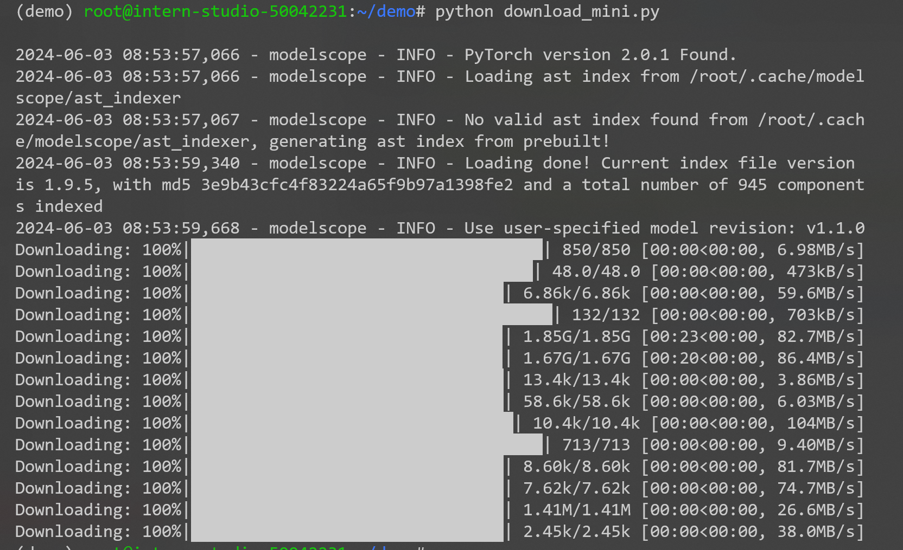
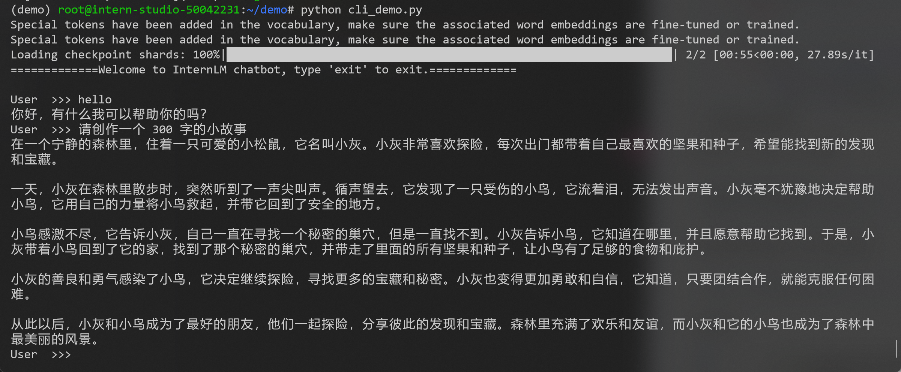

书生·浦语大模型实战1-1
安装环境
在刚打开开发机的过程中显示没有文件或路径，如下：

应该是误删了什么东西，因为指导书中写了一开始就配有base环境，但是我的没有，所以考虑重置一下环境吧。
以下是操作步骤：
慎重执行！！！！所有数据将会丢失，仅限 InternStudio 平台，自己的机器千万别这么操作*
第一步本地终端 ssh 连上开发机（一定要 ssh 连接上操作，不能在 web 里面操作！！！）
第二步执行rm -rf /root，大概会等待10分钟
第三步重启开发机，系统会重置 /root 路径下的配置文件
第四步 *ln -s /share /root/share
这里需要配置本地SSH远程连接，因此需要生成公钥和私钥，参考网上教程进行连接，连接成功如下：

接下来进行删除操作并重置环境。

可以看到，重新启动后没有那句报错了，成功解决，并且也有了初始环境base，看一下接下来安装conda环境有没有错误。

下载conda环境成功：

下载模型
新建文件download_mini.py，内容如下：
1 | import os |
这段代码的作用是用来下载模型，其中snapshot_download用于从hub中下载模型，那么这个hub是什么呢？以下是简要介绍：
官网：Hugging Face – The AI community building the future.
Hugging Face Hub和 Github 类似，都是Hub(社区)。Hugging Face可以说的上是机器学习界的Github。Hugging Face为用户提供了以下主要功能：
模型仓库（Model Repository）：Git仓库可以让你管理代码版本、开源代码。而模型仓库可以让你管理模型版本、开源模型等。使用方式与Github类似。
模型（Models）：Hugging Face为不同的机器学习任务提供了许多预训练好的机器学习模型供大家使用，这些模型就存储在模型仓库中。
数据集（Dataset）：Hugging Face上有许多公开数据集。
hugging face在NLP领域最出名，其提供的模型大多都是基于Transformer的。为了易用性，Hugging Face还为用户提供了以下几个项目：
- Transformers(github, 官方文档)：Transformers提供了上千个预训练好的模型可以用于不同的任务，例如文本领域、音频领域和CV领域。该项目是HuggingFace的核心，可以说学习HuggingFace就是在学习该项目如何使用。
- Datasets(github, 官方文档)：一个轻量级的数据集框架，主要有两个功能：
- 一行代码下载和预处理常用的公开数据集；
- 快速、易用的数据预处理类库。
- Accelerate(github, 官方文档)：帮助Pytorch用户很方便的实现 multi-GPU/TPU/fp16。
之后使用新装的环境demo来执行上述代码：python /root/demo/download_mini.py，执行结果如下：

运行 cli_demo
新建文件cli_demo.py，内容如下：
1 | import torch |
代码解释：
AutoTokenizer.from_pretrained()用于从指定的预训练模型名称或路径中加载相应的分词器。- 参数
trust_remote_code=True表示信任远程模型的代码 device_map='cuda:0'指定在 GPU 上运行。这将加载模型的分词器
- 参数
AutoModelForCausalLM.from_pretrained()用于从指定的预训练模型名称或路径中加载相应的模型，这里的模型就是我们第二步中下载的模型。- 参数
trust_remote_code=True表示信任远程模型的代码 torch_dtype=torch.bfloat16表示使用bfloat16减少精度device_map='cuda:0'指定在 GPU 上运行。这将加载模型
- 参数
最后有一个循环，其中接受用户输入并将其提供给模型，模型生成响应。响应被打印出来，直到用户输入 ‘exit’ 来退出对话。
使用demo环境运行代码：python cli_demo.py，运行结果如下：
